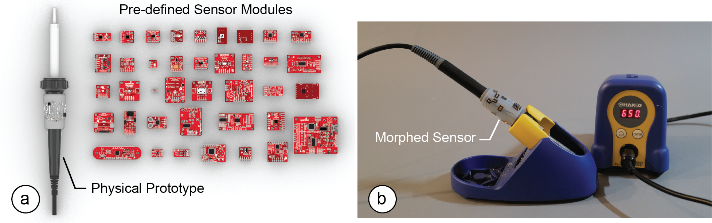

Publication
Junyi Zhu, Yunyi Zhu, Jiaming Cui, Leon Cheng, Jackson Snowden, Mark Chounlakone, Michael Wessely, Stefanie Mueller.
MorphSensor: A 3D Electronic Design Tool for Reforming Sensor Modules
In Proceedings of
UIST ’20.
DOI PDF Video Video Press
DOI PDF Video Video Press
1 / 92

2 / 92

3 / 92

4 / 92

5 / 92

6 / 92

7 / 92

8 / 92

9 / 92

10 / 92

11 / 92

12 / 92

13 / 92

14 / 92

15 / 92

16 / 92

17 / 92

18 / 92

19 / 92

20 / 92

21 / 92

22 / 92

23 / 92

24 / 92

25 / 92

26 / 92

27 / 92

28 / 92

29 / 92

30 / 92

31 / 92

32 / 92

33 / 92

34 / 92

35 / 92

36 / 92

37 / 92

38 / 92

39 / 92

40 / 92

41 / 92

42 / 92

43 / 92

44 / 92

45 / 92

46 / 92

47 / 92

48 / 92

49 / 92

50 / 92

51 / 92

52 / 92

53 / 92

54 / 92

55 / 92

56 / 92

57 / 92

58 / 92

59 / 92

60 / 92

61 / 92

62 / 92

63 / 92

64 / 92

65 / 92

66 / 92

67 / 92

68 / 92

69 / 92

70 / 92

71 / 92

72 / 92

73 / 92

74 / 92

75 / 92

76 / 92

77 / 92

78 / 92

79 / 92

80 / 92

81 / 92

82 / 92

83 / 92

84 / 92

85 / 92

86 / 92

87 / 92

88 / 92

89 / 92

90 / 92

91 / 92

92 / 92

MorphSensor: A 3D Electronic Design Tool for Reforming Sensor Modules

Figure 1. (a) MorphSensor is a 3D electronic design tool for reforming pre-defined sensor modules into free-form electronic component arrangements that better integrate with the three-dimensional shape of a physical prototype. (b) A fabricated morphed air quality sensor integrated with the soldering iron.
MorphSensor is a 3D electronic design tool that enables designers to morph existing sensor modules of pre-defined two-dimensional shape into free-form electronic component arrangements that better integrate with the three-dimensional shape of a physical prototype.
MorphSensor builds onto existing sensor module schematics that already define the electronic components and the wiring required to build the sensor. Since MorphSensor maintains the wire connections throughout the editing process, the sensor remains fully functional even when designers change the electronic component layout on the prototype geometry.
We detail the MorphSensor editor that supports designers in re-arranging the electronic components, and discuss a fabrication pipeline based on customized PCB footprints for making the resulting freeform sensor. We then demonstrate the capabilities of our system by morphing a range of sensor modules of different complexity and provide a technical evaluation of the quality of the resulting free-form sensors.
Introduction
In the last decades, the availability of sensor modules that are easy to use and affordable has increased substantially. Today, designers are able to quickly prototype interactive objects using plug-and-play sensor modules, such as those for Arduino [2], Phidgets [17], and .NET Gadgeteer [41].
While such sensor modules enable designers to prototype basic functionality on a breadboard, they are difficult to use in the later stages of design when designers need to integrate interactive function with the physical prototype of a device.
Since the modules come in two-dimensional, mostly square shapes, they are hard to integrate with the three-dimensional shape of a physical prototype, which can lead to aesthetic sacrifices, inaccurate sensor readings, and user interface layouts created based on the shape of electronic components that are not desirable for interaction.
HCI researchers investigated how to reduce these issues by providing 3D editing environments that enable designers to place sensor modules alongside the 3D geometry (Printy [7], Plain2Fun [42]). However, since these editors only allow designers to place sensor modules on the geometry but not to edit the sensor module itself, they limit the level of integration possible between form and function.
Recently, some commercial EDA tools, such as Altium Designer [3] and Autodesk Fusion 360 [4], have taken this a step further by integrating electronic design (ECAD) and mechanical design (MCAD), and allow 3D visualization of the PCB board. However, they only allow the visualization after the electronic design and still treat editing of the electronic design and object design as two separated workflows. which prevents users from effectively designing electronic function in the context of a prototype’s shape.
In this paper, we present MorphSensor, a 3D electronics design tool for designing electronic function in the context of a prototype’s three-dimensional shape (Figure 1). MorphSensor unifies electronic and physical object design in one 3D workspace as one complete workflow, which leads to better form and function integration. To add a sensor to a prototype shape, designers start by loading an existing sensor module. Upon import, MorphSensor automatically creates 3D models for the board and its electronic components, and creates airwire connections that represent the logic. Designers can then move each electronic component onto the desired location on the 3D prototype design and redraw the wires to route across the prototype surface. MorphSensor supports designer in this editing process by providing a range of custom support tools, including tools that help identify the main sensing components and tools that automatically re-position components on the prototype geometry to fit into the available space.
To fabricate the resulting electronic designs, we use a modified fabrication pipeline based on CircuitStickers [20]. Rather than sending the PCB layer to a manufacturing facility, which slows down design iteration, we use a set of pre-fabricated PCB footprints, which we call BigFoots. The BigFoot for an electronic component can be manufactured ahead of time and then used immediately at the time of prototyping. BigFoots have two types of connector pads: the small pads, which connect to the electronic component’s original SMD footprint, and the larger pads with a slightly bigger area sufficient to be connected to an inkjet-printed or hand-drawn circuit trace.
In summary, we contribute:
- an electronic design tool integrated into a 3D editor that builds onto existing schematics and maintains connectivity throughout the editing process to facilitate sensor layout designs that integrate well with a prototype’s shape
- a set of support tools that automatically identify the main sensing elements, re-arrange components within a selected area, and prevent wire crossings by adding jumpers
- a fabrication pipeline based on CircuitStickers [20] that introduces pre-fabricated PCB footprints, called BigFoots, to rapidly fabricate the resulting morphed sensors right after editing
- a demonstration of MorphSensor’s applicability across different use cases and object geometries at the example of five interactive prototypes
- a technical evaluation of conductivity and sensing functionality
MORPHSENSOR CORE COMPONENTS
MorphSensor is a 3D editing tool that allows designers to edit prototype geometry and electronic component layouts in the same environment by treating all electronic components as 3D models. By using 3D models, designers can work in a familiar environment and with a familiar representation rather than with electronic design automation tools and their 2D specification files. In addition, since the 3D editor shows both the prototype and the electronic design in one unified view, it enables editing of interactive function in the context of the prototype design.
MorphSensor builds onto existing electronic design files that are available for a wide range of sensor modules. Such electronic design files contain both the schematic file (.sch) that defines how electronic components are connected with each other, as well as the board file (.brd), which defines where each electronic component is located and how the wires that connect them are routed. Given this information, MorphSensor reconstructs the sensor in its editing environment and maintains connectivity between individual components even when the physical layout is changed.
The schematic and board files also provide a source of information that can be used for additional support tools. For instance, on a sensor module, only few components contribute to the actual sensing (active sensing elements, ICs), while the remaining elements, such as resistors and capacitors are supporting components. For designers, it is important to differentiate between them when space on the prototype geometry is tight or sensing in a specific location is needed. The main sensor component should be placed as close to the designated measuring location as possible, while the remaining passive components can typically go elsewhere on the prototype. By extracting the component names from the schematic and board files and matching them against a list of the main active and passive components, we can provide designers with information which components on the sensor module contribute to the actual sensing.
To enable designers to fabricate the resulting circuits during a prototyping process without the need to send it to a manufacturing facility, MorphSensor supports designers with a set of standardized PCB footprints (e.g. JEDEC, SOT, SOIC, LGA packages), one for each component. These footprints can be pre-fabricated once using an external manufacturing facility, and then used accordingly during different prototyping sessions. For components with non-standard footprints and those that are not yet recorded in MorphSensor, MorphSensor can automatically generate the corresponding BigFoots from its footprint in the board file. Thus, a prototyping session with MorphSensor consists of first editing the sensor in the 3D editor to fit it with the prototype geometry and then fabricating it right away using the pre-fabricated foot prints and a fabrication process, such as inkjet printing or drawing with a silver ink pen to create the wire connections. In the next section, we describe each step in more detail.
MORPHSENSOR 3D EDITOR
The MorphSensor 3D editor is an extension to an existing 3D modeling program (Rhino3D). Below we demonstrate how a designer can load an existing sensor, re-arrange its compo- nents on the prototype, and export the design for fabrication.
Acquire Board/Schematic Files for Existing Modules
Designers start by creating the 3D model of the prototype design. Once they are ready to add interactive functionality, designers open the MorphSensor sensor database (Figure 2b), which contains a range of different modules in categories, such as biometrics, environment, infrared etc., and load the selected module into the view. Within the MorphSensor database, there are in total 84 sensor modules across 11 different functional categories (downloaded from SparkFun).

Figure 2. (a) MorphSensor main UI (top half), (b) MorphSensor sensor database.
Alternatively, designers can also download a sensor module from online platforms, such as Adafruit or SparkFun, that many designers already use for purchasing sensor modules. When loading a sensor module from a website or other platform, MorphSensor asks the user to load the board (.brd) file using the corresponding button in the user interface (Figure 2a). The schematic file is loaded automatically since its location is linked inside the board file.
Convert Schematic/Board Files into 3D Models
Once loaded, MorphSensor extracts the sensor information from the board and its corresponding schematic file, and then subsequently creates the board and the individual electronic components as a set of 3D models (Figure 3), one representing the board shape and one for each component on the board. To prevent designers from accidentally editing the components’ shapes, the 3D model of each component is locked.
In addition to creating the sensor components, MorphSensor also creates a set of air-wires, i.e. lines that represent the logical connections between each component but that do not specify the physical routing of the wires.

Figure 3. Loaded Sensor Module 3D Models and Prototype Design Geometry
Identifying Components
To highlight which electronic components on the sensor module contribute to the actual sensing and which are passive components, designers can click the ‘Color-Code Active Sensing Components’ button (Figure 2a), which highlights them in a visually distinct color (Figure 4). The active sensing components are generally more placement-sensitive. Components that are not highlighted do not contribute to the active sensing (resistors, capacitors) and can be flexibly placed where space is available.

Figure 4. Highlight Active Sensing Components.
Arranging Electronic Components on the 3D Model
Designers can arrange individual electronic components on the 3D model using common 3D editing tools, such as move and rotate. To support the alignment of electronic components onto the curved prototype geometry, MorphSensor first asks designers to select the target prototype geometry. Designers can either select entire objects, or use a lasso tool to select only a part of a 3D object as the target area. During the following move and rotation operations, MorphSensor then automatically “snaps” components onto the prototype’s surface when they are in close proximity, and displays a “prohibited” icon (Figure 5b) when the components are held over an invalid location, such as in mid-air. Components are also automatically tilted to best approximate the curvature of the prototype geometry (Figure 5c). Designers are free to change the prototype geometry any time during the design process.

Figure 5. (a) MorphSensor Main UI (bottom half), (b) prohibits when off the prototype geometry and (c) snaps electronic component to geometry when valid.
During the entire editing process, MorphSensor maintains connectivity by tracking the logically connected pin locations, and displays a ‘3D’ air wire by drawing a geodesic curve between the pins along the prototype geometry in real-time (Figure 6b). Users can choose to either display or hide the air wire connections using the ‘Show Logic Connections” button. Hiding the connectivity causes less visual clutter from the air-wires when placing individual components, however, designers may want to display the connectivity from time to time to estimate if the spacing of components is sufficient for the wires to be routed (Figure 6a).

Figure 6. (a) Prototype with snapped electronic components, (b) MorphSensor with Logic Connection Air-wires.
Auto-layout: While designers have the option to place all components manually to remain in full control over the final design, MorphSensor also offers auto-placement functions. The “Auto-place Selected Components” button distributes and snaps all selected components onto the assigned prototype geometry (Figure 7). If there are already components on the prototype geometry that the designer had placed before and that have logic connections to the other components, the auto-placed components will be distribute in the area around them to keep wire connections short.

Figure 7. Auto-placed Electronic Components onto Prototype Geometry.
Finally, when designers change a part of the prototype’s geometry that holds electronic components and the electronic components no longer fit, designers can either manually move the components or click the auto-placement button again, which causes MorphSensor to re-layout the components and snap them back onto the modified geometry.
Drawing Wires
After designers positioned the electronic components, they need to convert the air wires into physical wires. To convert an air wire into a physical wire, designers first select the ‘draw wire’ tool, and then select one of the pins the air wire is connected to. After clicking on the pin, designers draw a path onto the 3D geometry with each new click creating a new connected wire segment and each point along the wire path automatically snapping to the object surface (Figure 8a). Once the designer connects the drawn wire to the pin at the end of the air wire, it is complete and the connection is established. This is indicated to the designer by rendering the newly drawn wire in silver. As a result of the conversion, the air-wire disappears (Figure 8b). If designers want to redraw a physical wire, they can delete the previously drawn wire using the ‘delete wire’ tool, which brings the air wire back.

Figure 8. (a) Drawing wire on prototype geometry, (b) silver wire shows up and corresponding air-wire disappears.
Preventing Wire Crossing (Jumper): When wires cross, MorphSensor automatically adds a wire jumper, allowing both wires to be spaced out sufficiently (Figure 9). Wire crossing mostly happen because commercial sensor modules are fabricated as two-layer PCB boards allowing for wires to be routed on the top and bottom. However, at-home fabrication techniques, such as silver inkjet-printing only allow for single-sided PCBs. Thus, as a result, wires may overlap with each other and thus a jumper becomes necessary.

Figure 9. Auto-generated wire jumpers over intersections.
Connecting to Microcontroller & Output Display: After converting all wires for a sensor module, designers may want to connect it to a microcontroller and a display for rendering output (Figure 10). Similar to loading a sensor module, designers can load the microcontroller (e.g., ATTINY85-20SUR) and output display (e.g. an Adafruit Sequin LED) from the MorphSensor module database. However, since MorphSensor does not know how designers want to connect between sensor modules, no air wire is shown and designers have to draw the connection by themselves.

Figure 10. Connecting to the microcontroller & display LED.
Overriding Air-Wires and Deleting Pins: Finally, MorphSensor also allows designers to customize the routing. For instance, designers may want to update the routing to use a shared ground that is close to the component rather than routing an additional wire to the microcontroller. In addition, MorphSensor also allows designers to delete pins and the corresponding air wires if they do not need the functionality.
Exporting the Design for Fabrication
Once a design is finished, designers can export the design for fabrication using the ‘Select Output Area’ button, which activates a lasso tool for marking up the area on the prototype the designer would like to fabricate.
Since fabrication is in 2D, MorphSensor converts the 3D circuit into a 2D projection via surface unrolling (Figure 11). MorphSensor displays the 2D projection on a letter-sized sheet next to the 3D model and exports it as an .svg file. In the exported .svg file, MorphSensor includes a boundary box and unrolled surface outlines as fabrication references.

Figure 11. MorphSensor Export for Fabrication.
FABRICATING MORPHSENSORS
To fabricate MorphSensors, designers can choose to either have their board fabricated as a high-fidelity prototype using a professional PCB manufacturing facility but at the expense of a time-delay, or to create a low-fidelity prototype using pre-fabricated PCB footprints (BigFoots) and silver inkjet printing, which can be made immediately on export.
To obtain a high-fidelity prototype, designers convert the SVG file into Gerber files, where the unrolled surface outline is the board’s new shape, and then send them to professional PCB manufacturer as a single-layer flexible PCB design. If designers do not want to include the BigFoot footprints, they have the option to disable BigFoot generation in the editor and instead import standard SMD footprints.
To create a low-fidelity prototype that can be made immediately upon export from the editor, designers follow the fabrication workflow as outlined below.
Obtaining Electronic Components and BigFoots
To fabricate a MorphSensor, designers start by taking out a sensor module bag from their prototyping toolkit that contains all the electronic components required to make the sensor and in addition the corresponding BigFoot PCB footprints. The BigFoot PCB footprints are double layer polyimide flex PCBs, with 0.1mm thickness. The PCB footprints are left as squares for easier handling during the fabrication process and can be cut into shape at the end.
Attaching Electronic Components to the BigFoots
In a first step, designers connect the electronic components to the pre-fabricated BigFoot PCB foot prints. For this, they can either solder the components directly (Figure 12a), or instead use solder paste and a reflow oven, which is easier.
Once the component is soldered to the BigFoot, designers attach double-sided electrically conductive adhesive transfer tape (3M ECATT [1]) to the back of the BigFoot (Figure 12b). Designers then cut the BigFoot with the attached tape into shape using scissors.

Figure 12. (a) soldering component onto the BigFoot, (b) attaching double sided ECATT tape to the BigFoot.
Inkjet-Printing the Main Circuit Traces
Next, designers load the exported 2D file into their inkjet printer and fabricate the main circuit traces (Figure 13a). Alternatively, they can also use the 2D file as input to a vinyl or laser cutter to fabricate a stencil for drawing the circuit with a silver pen.

Figure 13. (a) Inkjet printing the main circuit. (b) Peeling off the ECATT tape on the electronic component and attaching it to the main circuit.
Attaching the Footprints to the Main Circuit
Next, designers peel the backing off the ECATT tape and then carefully stick the BigFoot with its component onto the circuit sheet (Figure 13b). The BigFoots are designed to be visible from both the top and the bottom layer, which is helpful for aligning the footprints with the corresponding pads printed in silver ink on the sheet. The jumper is implemented as a 0603 resistor BigFoot, with top pads connected by wire instead of an actual resistor (i.e. a zero-ohm resistor). Designers might also attach double-side tape to the back of inkjet-printed main circuit to attach it to the object later. Alternatively, designers can also print an outline of the sticker onto the paper as an alignment aid.
Attaching the Circuit to the Object Geometry
After placing all the BigFoots with their electronic component on the main circuit, designers next cut out the circuit with the double-side tape to reduce the size of the sensor, and attach it onto the prototype (Figure 14).

Figure 14. (a) Cut out the morphed sensor, and (b) attach it onto the prototype.
If the prototype geometry is a developable surface and thus a 2D sticker adheres well, designers do not have to cut the sensor precisely along its outline but can simply cut along the boundary box. If the prototype geometry is non-developable (e.g., doubly-curved), designers need to cut the circuit more precisely along the unrolled surface outlines, or draw the circuit directly onto the object geometry using a silver ink pen and stencil rather than an inkjet-printed sheet. Once finished and the circuit is tested and confirmed to work properly, designers can brush a thin layer of transparent nail polisher onto the naked silver traces to prevent future short-circuiting and improve prototype durability.
APPLICATIONS
We used MorphSensor to prototype a range of interactive devices highlighting different levels of complexity, including single and multi-sensor arrangements as well as different fabrication methods, using both inkjet printing and drawing.
Unobtrusive Sensing: Earpod with Accelerometer for Sleep Tracking and Ring with Weather-awareness
When measuring human behavior data, the presence of a device can be a variable that affects people’s behavior [24]. Therefore, a data recording device that can be integrated with objects that are part of people’s regular behavior can realize more accurate recording due to its non-instructive measurement. With MorphSensor, researchers can integrate sensors into existing objects to achieve non-intrusive measurements.
For example, to measure users sleep quality via their sleeping behavior, we integrated a 3-axis accelerometer with an existing earpod that is normally used to listen to calming music while falling asleep (Figure 15). To design the earpod, we loaded its 3D model into MorphSensor and then added the Triple Axis Accelerometer sensor (ADXL335) from the MorphSensor database to it. After placing the main accelerometer sensing element central onto the earpod to receive the best measurement, we placed the remaining passive capacitors along the cylinder and then routed the wires around the earpod shape. The wire then connects to a microcontroller attached to the user’s phone. Since the earpod is a highly curved geometry and thus a 2D inkjet printed circuit on paper would not confirm well, we used a silver ink pen instead. We use the MorphSensor visualization in the 3D editor to guide us where to draw the wires. Making the layout for the sensor took 20 mins and fabricating the sensor took 25 mins.

Figure 15. (a) Earpod design in MorphSensor system, (b) non-instructive measurement through an earpod.
Similarly, we can use MorphSensor to design a “weather-aware” ring, augmenting an object that many people use on a daily basis with the capability to provide advice on weather and dressing-code (Figure 16). We accomplish this by integrating a temperature sensor with the ring geometry. To design the ring, we loaded its 3D model into MorphSensor and then added the temperature sensor (TMP102) from the MorphSensor database to it. After placing the main sensing element central onto the ring to receive the best measurement, we placed the remaining four resistors and one capacitor along the boundary of the ring and then routed the wires to the bottom of the ring where they can connect to a microcontroller for processing the readings. Similar to the earpod, we used drawing with silver ink due to the highly curved geometry of the ring. Making the layout for the sensor took 15 min and fabricating the sensor took 20 min.

Figure 16. Weather-aware ring design as a MorphSensor.
Preserving Substrate Quality: Textile Facemask with Humidity Sensor
Attaching sensor modules to textiles makes them more rigid and prevents airflow through them in the locations where the sensor modules are attached. This can be especially an issue when the textile is part of personal protective equipment and the wearer has to breathe through the textile. Any obstruction that occurs prevents airflow and thus makes breathing more difficult. In the example below, we designed a smart facemask with an integrated humidity sensor and LED that alarms the user when the mask is getting to humid, which indicates a need to switch the mask to prevent contamination [16]. To maximize airflow through the mask, we used MorphSensor to place the main sensing element of the humidity sensor central to the user’s airflow, but moved the remaining elements (resistors, capacitors) and the majority of the wiring out of the way and onto the side of the mask (Figure 17). The design contains the entire circuit, including a humidity sensor (HIH6130), a microcontroller (ATTiny85-20SU), and an LED (Adafruit LED Sequin). We fabricated the circuit using silver inkjet printing. Making the circuit layout took 30 min and fabricating the circuit took 25 min).

Figure 17. (a) N95 mask design in MorphSensor System, (b) using MorphSensor mask to monitoring substrate quality.
Prototyping Function: Glasses that Sense Blue Light Exposure and Other Environmental Data for Well-Being
Building new device functionality and deploying it with actual users is an important step in the prototyping process. However, when using breadboard sized components, many prototypes are too obtrusive, uncomfortable to wear, or may not look socially acceptable to collect real-world data from users. For example, a designer who wants to prototype a set of glasses that measure the amount of blue light exposure a user has and the air quality the user is exposed to on a daily basis, may be able to prototype the glasses using sensor modules but the resulting prototype will either be impractical to wear due to the obtruding modules from the glass frame or the user may refuse to wear it due to its appearance.
With MorphSensor, we can quickly create a more integrated prototype. After loading the pair of glasses as a 3D model into the MorphSensor 3D editor, we load a light sensor (TEMT6000) from the MorphSensor data base. We place the main sensing element of the light sensor module right next to the user’s eyes and place the resistors and capacitors further back on the temple. We then place an LED (APA102 5050 DotStar) onto the temple to indicate the current measurement, and after connecting all wires to a microcontroller (ATTiny85-20SU) export the design and fabricate it (Figure 18). We fabricated the circuit using silver inkjet printing. Making the layout for the circuit took 15 min and fabricating the circuit took 20 min.

Figure 18. Glasses design as a MorphSensor to monitor light absorption and protect eye health.
IMPLEMENTATION
MorphSensor’s main application is implemented as a Grasshopper Plugin for the 3D editor Rhino3D. Below we describe MorphSensor’s process of converting the board and schematic files into 3D models, maintaining connectivity during the layout process, and generating the fabrication files.
Convert Board Files to 3D Models
To convert the board file (.brd) for 3D editing, MorphSensor generates individual 3D models for each electronic component as well as a 3D model for the underlying board.
To generate a 3D model for each electronic component on the board, MorphSensor first extracts the name of each component from the board file using the open-source tool EagleUp [15]. EagleUp takes as input the .brd board file and outputs the names of the electronic components (in .eup file format). MorphSensor can then use the component names from the .eup file to find a matching 3D model in the Sparkfun 3D Model Component Library [36] for SketchUp, which for each component name has a corresponding 3D model file (in <component-name>.skp file format).
After loading the electronic component 3D models from the SparkFun 3D Model library, MorphSensor still has to place them into the right location on the board. The previously generated .eup file from EagleUp also contains this information, which MorphSensor uses to place 3D models accordingly.
After generating the components as 3D models, MorphSensor also generates the 3D model of the board. The previously generated .eup file from EagleUp also contains information on the shape of the board, the thickness of the board, and the texture of each layer of the board (copper, solder mask and silk textures in separate .png files). We input this information into a SketchUp Script (also part of EagleUp), which first generates the geometry of the board using the board shape and thickness, and then textures it using the .png files. Since each side of the board can only be textured with one .png file, MorphSensor merges the copper, solder mask, and silk into one image using ImageMagick [21].
Once all 3D models are generated and the components are positioned, MorphSensor saves the entire assembly as a new SketchUp .skp file and then uses Rhino3D’s import () function to import the 3D model into the Rhino3D workspace.
Creating the Air Wires
To convert the board file (.brd) for 3D editing, MorphSensor generates individual 3D models for each electronic component as well as a 3D model for the underlying board.
MorphSensor creates the air wires by reading the information from the board and schematic files. MorphSensor starts by creating a list of all components and their available pins, as well as which signals they are connected to. To accomplish this, MorphSensor parses the board file (.brd, XML structure) to extract information about its connection groups (located in “signals” and “contactref” attributes). For example, a capacitor with only a VCC and GND connection may be encoded as a group labeled ‘C1’ with two pins ‘VCC’ and ‘GND’. After compiling the list of all components and their pins, MorphSensor next loops through the signal list and marks all pins that connect to the same signal as “connected”. It then generates a.json file with this connection information.
Next, MorphSensor detects where the pins are physically located on the electronic components. For this, it traverses through all electronic components and for each electronic component retrieves the correct footprint layout from a custom look-up table. The footprint layout contains the relative displacements from each footprint-connector to the center of the electronic component, which we use to calculate their world coordinate in the 3D editor. In this step, MorphSensor also adds the BigFoot to each component. The footprint connector pads are then grouped with the corresponding 3D models of the electronic components, which makes them move and rotate together.
After knowing the physical location of each footprint-connector, MorphSensor parses the .json file, gets the connection information and maps them to the actual location of their corresponding footprint-connectors. Knowing the pairs of points that it has to connect, MorphSensor then calculates the geodesic curve between the points on the prototype’s mesh to form the corresponding air wire.
Identifying Placement Sensitive Components
To determine which components are placement sensitive, MorphSensor correlates the components name with information from a look up table, in which we encoded information on passive components (e.g., resistor, capacitor) and circuit connection elements (e.g., pad jumper, pin hole) who can be positioned flexibly. We consider all other components as placement-sensitive.
Component Placement Tools
The snapping tool works by finding the closest mesh point that the designer is pointing at, calculating the normal of the mesh on that mesh point, and rendering a preview of what the placement of the electronic component would look like. The rotation of components works by utilizing Rhino’s rotation method while fixing the rotation axis to the normal of the mesh on the center of the electronic component.
Automatic Layout
We implement the 3D auto-placement of electronic components based on Poisson-Disc Sampling algorithm, with each sensor representing a ‘point’ that gets distributed over an area. Before deciding on Poisson-Disc Sampling, we investigated several existing 2D sampling algorithms, including Mitchell’s Best-candidate algorithm, the Gridplace algorithm, the Physics algorithm, and random sampling. We chose Poisson-Disc Sampling because it allows direct control of minimum and maximum distance values that define how components are spaced with respect to each other and also places components with respect to an anchor point instead of a grid. We use this to ensure that passive components are placed in proximity to the active ‘anchor’ component. Since we can vary minimum and maximum distance over multiple algorithm runs, we can keep certain groups of components close together, such as an IC component and its corresponding decoupling capacitor.
The Poisson-Disc Sampling algorithm starts by iterating over each point (sensor) and trying to place them one point at a time. When deciding where to put a new point, the algorithm starts by randomly picking a previously placed point and then randomly generating a new point that is within distance of min_dist and max_dist away from the previous point while being within the bounds of the selected object geometry. In order to make the distribution algorithm work on 3D geometries, we change all the “distance” measurements in the algorithm to their corresponding geodesic distances. After placing the random point, the point is also checked to be at least min_dist away from any previously placed point. If it is, the point is a valid placement. Otherwise, the algorithm starts over with a newly generated point. When every point is placed, the algorithm is done.
However, the algorithm may become slow if the number of sensors is very large or if the distance specified is too small. Then the probability of generating a new point that is valid (sufficiently far away from all previously placed points) decreases, which results in many iterations before finding a valid point.
Drawing Wires
When the designer draws a wire, MorphSensor initiates an interface similar to Rhino’s polyline drawing interface. The designer is prompted to pick points on the mesh surface, and MorphSensor calculates and displays the geodesic curves between the points in the order of the selection.
Creating the Fabrication Files
MorphSensor creates the 2D projection for the fabrication file by generating a MeshGraph for the selected output area and then unrolling it onto its UV plane. It then finds the location of each electronic component’s footprint-connector and redraws the footprint-connector with correct orientation. Finally, MorphSensor redraws the wire connections by locating each wire curve’s control points on the MeshGraph and connecting them. The exported new circuit is then placed on a letter-sized 2D sheet for fabrication with an inkjet printer.
Computing BigFoot PCB Footprints Automatically
Since there is a large variety of different component footprints, MorphSensor’s pre-designed BigFoots cannot cover all possible electronic components. To determine which footprints are the most common and thus we need to supply designers with, we analyzed the top 97 sensor modules from SparkFun, made a list of their components, and then grouped them by their footprints. Around 75.8% of components followed standard footprints that can be found in open-sourced footprint libraries., which can be handled directly by MorphSensor system.
For the footprints that are not in our database, MorphSensor automatically generates corresponding BigFoots in EAGLE via a ULP script, with one connecting pad per SMD pad, and then import the newly generated BigFoots into the 3D editor. However, the auto-generated BigFoot can contain unnecessary connector pads, which take up more space compared to the ones designed manually (Figure 19). Note that for this analysis we only compared sensor modules with one or two PCB layers since most available off-the-shelf sensor modules are built in 2-layer to save fabrication cost.

Figure 19. (a) Manually Designed and (b) Automatically Generated Si7021 BigFoots.
EVALUATION
Next, we demonstrate that MorphSensor is able to reshape a variety of different sensor modules. We first evaluate the conductivity of our circuit creation (inkjet print + silver pen drawing), and then further evaluate the effectiveness of morphed sensors by testing them side-by-side with the original off-the-shelf sensor modules. For this part, we evaluate sensor modules with both digital signals (TMP102, I2C protocol), and analog signals (TEMT6000).
Conductivity of Morphed Sensor Circuit
We inkjet-printed 20 sets of test traces with a length of 5cm and various width ranging from 0.1mm to 1mm, incremented at 0.1mm (Figure 20a). The resistances ranged from 0.293 Ω/□ (0.1mm width) to 0.144 Ω/□ (1.0mm width) on average. To accomplish a low resistance while keeping the trace width small, we set the wire width to 0.5mm in the MorphSensor fabrication file, which results in 0.164 Ω/□ on average.

Figure 20. (a) Inkjet Print Traces, (b) Hand-drawn Traces.
For hand-drawn circuits, we conduct a similar evaluation and draw the 5cm silver traces on a 3D printed object with white PLA with trace widths varying from ca. 0.2mm to 1.0 mm, incremented at 0.2mm and 5 traces each (Figure 20b). The results show that the resistances range from a low 0.502 Ω/□ (1.0mm) to a high 0.789 Ω/□ (0.2mm) on average. In practice, we draw silver traces with width ~0.6mm, which results in on average < 0.60 Ω/□ traces. Considering the SMD resistors used for sensor modules, which are usually around a few thousand ohms, are typically +/- 5% in actual values and the error tolerance of the modern electronics, the extra resistance is acceptable for prototyping designs with low-power electronics (e.g. 3.3V and 5V sensor modules).
Effectiveness of Morphed Sensor
We designed our evaluation for morphed sensor effectiveness based on standard industrial assembly and testing procedures [22], which contains In-circuit Testing and Functional Testing. We ran the evaluation on both digital signal (TMP102, I2C protocol) and analog signal (TEMT6000) sensor modules.
In-circuit Testing via Multimeter: For all MorphSensors we built, we performed the following in-circuit testing: (1) a continuity test to evaluate if all components are connected, (2) a voltage test to evaluate if all capacitors have the correct value on the connected traces, and (3) a resistance test to evaluate if all resistors have the correct value. We know the correct values from the data sheet of the components. All of our morphed sensors passed the in-circuit testing.
Functional Testing: For the functional testing of our sensors, we examined MorphSensors with (1) ten one-minute individual runs, and (2) compared the readings to the Ground Truth (original sensor from SparkFun). For digital signals, we placed two TMP102 sensors side by side and measured the temperature from both devices at static room temperature. We recorded 609 samples at a rate of one per second. The expectation was that the sensors should have similar readings since the room did not have large temperature gradients. The data shows that the sensors had similar readings. There was an average difference of +/-.06°C between the data with a conservative max of .3°C. The variance of the difference between the signals was also small at .02. For analog signals, two phototransistor-based sensors (TEMT6000) were setup side by side under an LED lamp. We collected 300 data points at a sampling rate of one data point every 2 seconds. We calculated the percent difference of our sensor from the off-the-self sensor at every sample and found an average percentage difference of 0.6% and a maximum difference of about 4%. The data shows that the MorphSensors can match the off-the-shelf sensor modules with small error margins. This is true for both the analog and digital sensors.
DISCUSSION
In the next section, we reflect on limitations of our approach and discuss future opportunities for MorphSensor.
Limited Flexibility of Pre-fabricated Footprints: When the footprint is fabricated as part of the PCB of an entire circuit, the connector pad layout can be considered when the overall PCB layout is created. However, when pre-fabricating footprints, the connector layout that would least interfere with the object shape, is not yet known. To bypass this issue, we fabricate a variety of different footprint layouts that designers can choose from for each component.
Further Automating Electronics Design Knowledge: In its current form, MorphSensor already supports designers by maintaining connectivity of the circuit at all times and by highlighting which components contribute to the actual sensing. For future work, we plan to expand this set of support tools, for instance, by maintaining spatial relationships through grouping (e.g., for emitters and receivers) or by ensuring minimum distances between components. (e.g., for components that interfere with each other, such as heat sensitive and heat generating components). In addition, our assumption that all passive components can be placed in arbitrary locations needs to be refined with specific placement rules for various types of passive components. For instance, a decoupling capacitor for an IC requires needs to be placed close-by although being a passive component.
Eliminating Redundant Components in Multi-Sensor Designs: While in the current version of MorphSensor, we treat each sensor module individually, a future version of MorphSensor may be able to merge the circuits of multiple sensor modules together to eliminate redundant components and further save space.
Optimizing for Traditional Flexible PCB Manufacturing: While users have the option to outsource the system exported files to PCB manufacturers as a flexible PCB board, the MorphSensor system is currently optimized for rapid prototyping DIY boards. To better support the traditional flexible PCB manufacturing, users can disable the BigFoot generation, and instead import standard SMD footprints to take advantage of professional PCB Assembly. Multi-layer wiring functionality would also be much valued to enhance the flexible PCB design complexity.
CONCLUSION
We presented MorphSensor, a 3D electronic design environment for early-stage prototyping to facilitate the design of electronics in the context of a three-dimensional prototype geometry. By using a single workspace for both electronics and geometry design, designers are able to iterate on the interactive function and the prototype’s shape simultaneously. We demonstrated our system’s functionality and showcased a set of example prototype scenarios that illustrate its benefits across a range of use cases that build on different object geometries and sensing needs. Our implementation outlined the steps required to build such a system, including the need to automatically convert electronic design files into 3D model assemblies.
For future work, we plan to implement more complex PCB editing functionality into our system, such as multi-layer PCB boards and additional design support tools.
ACKNOWLEDGMENTS
We thank our colleagues from the MIT International Design Center and MIT EECS EDS for the hardware support. We thank Steve Hodges for helping us adapt the CircuitSticker fabrication method in the early stages. We especially thank Ruowang Zhang for her help with the photo and video capturing. This material is based upon work supported by the National Science Foundation under Grant No. 1716413.